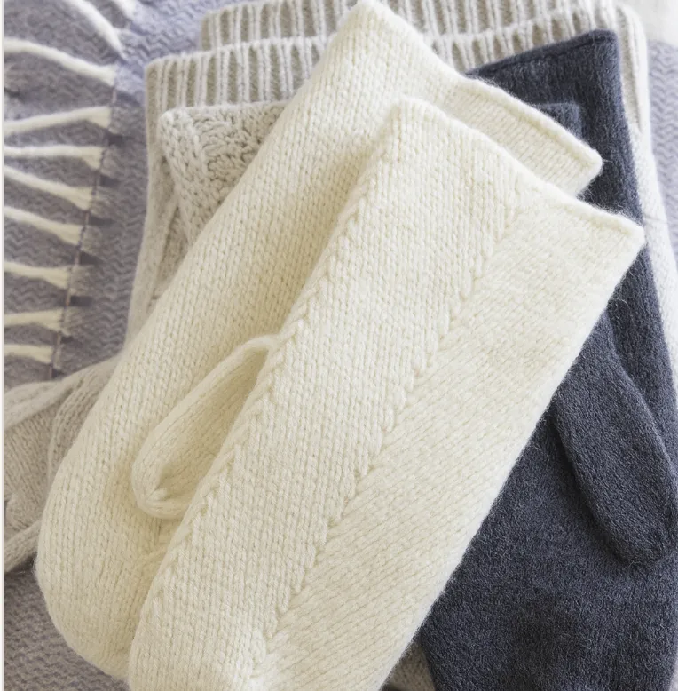
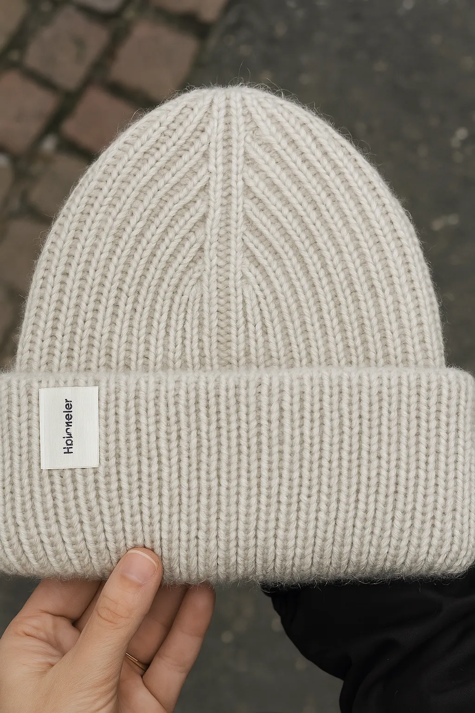
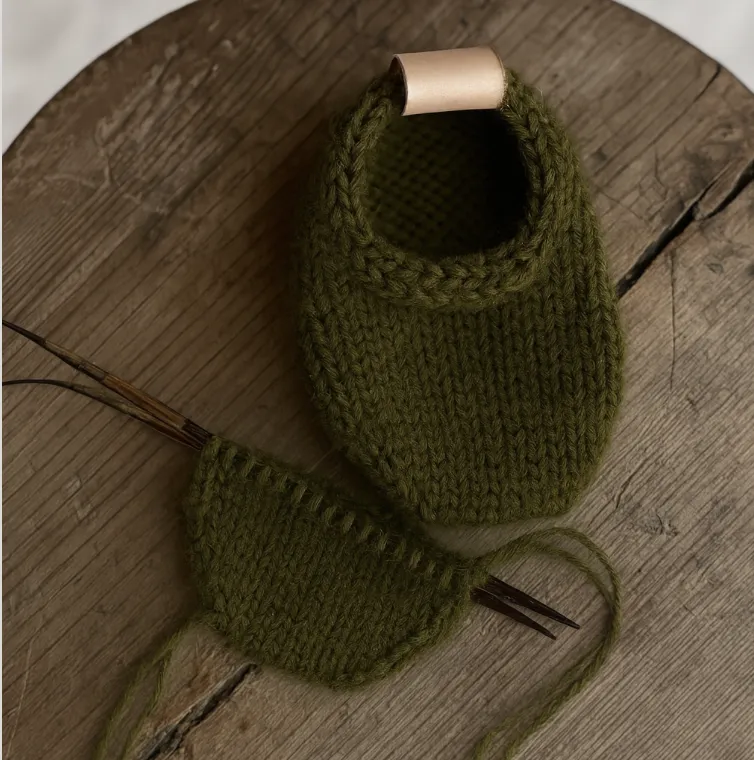
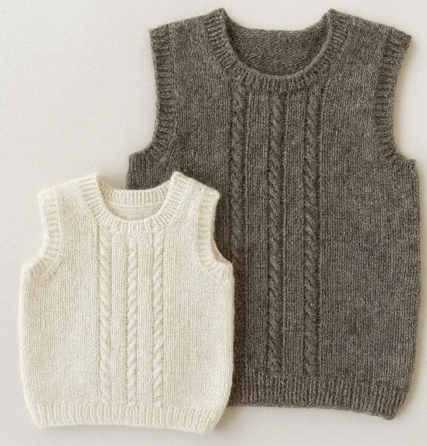
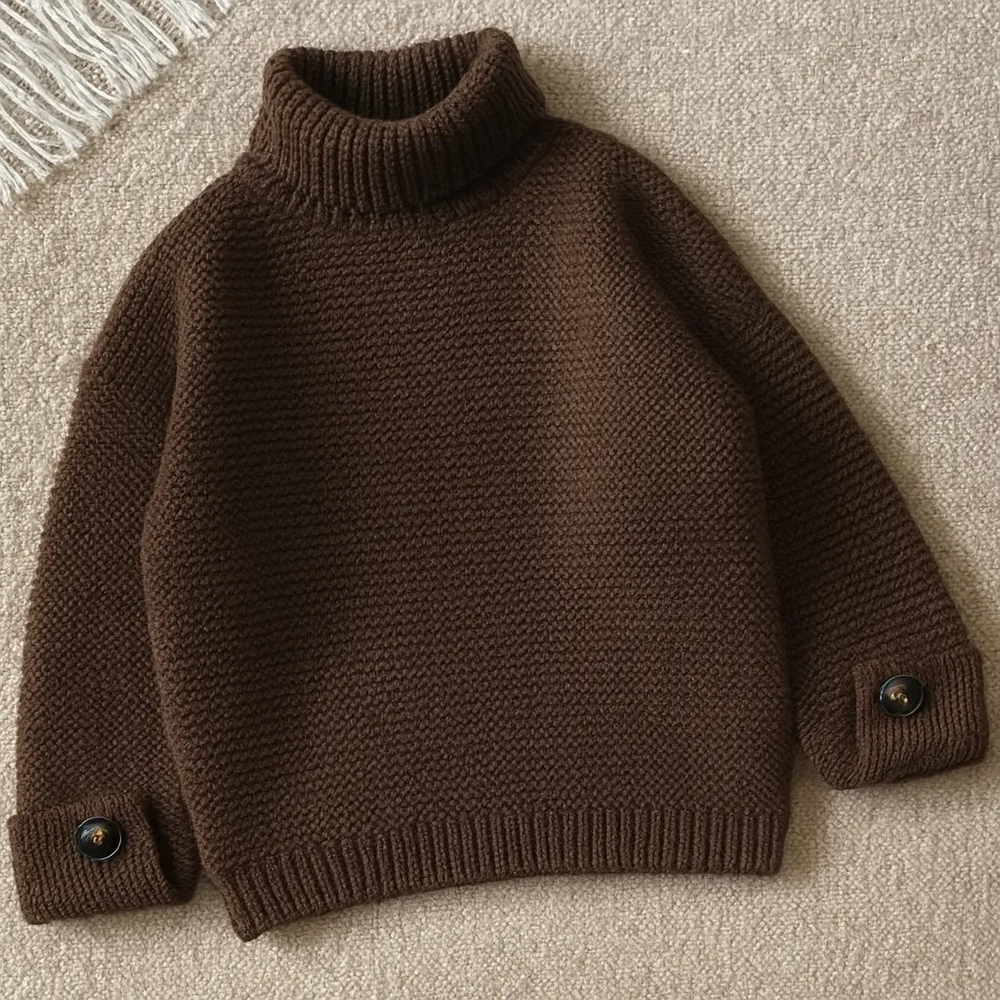
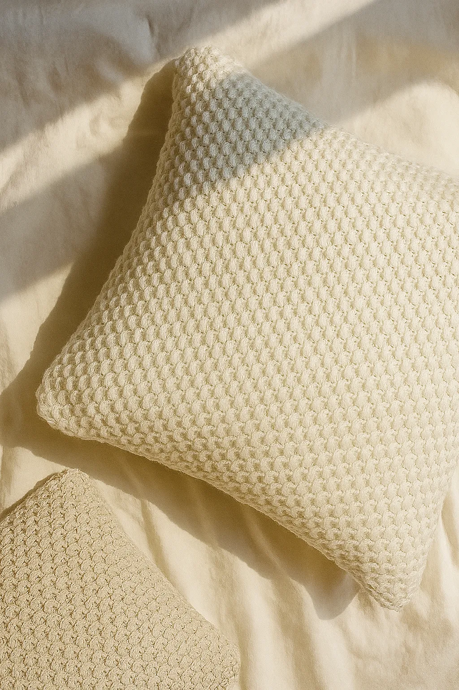
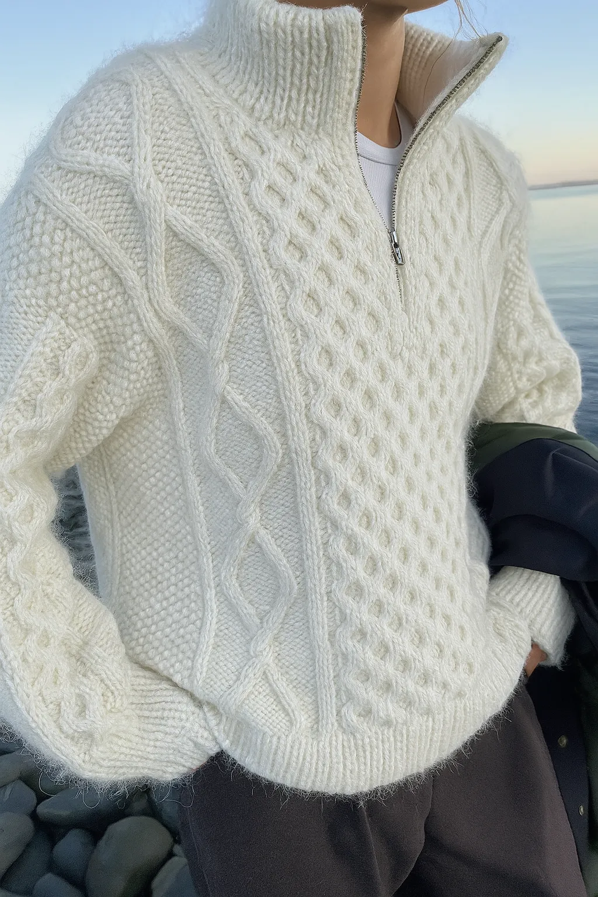
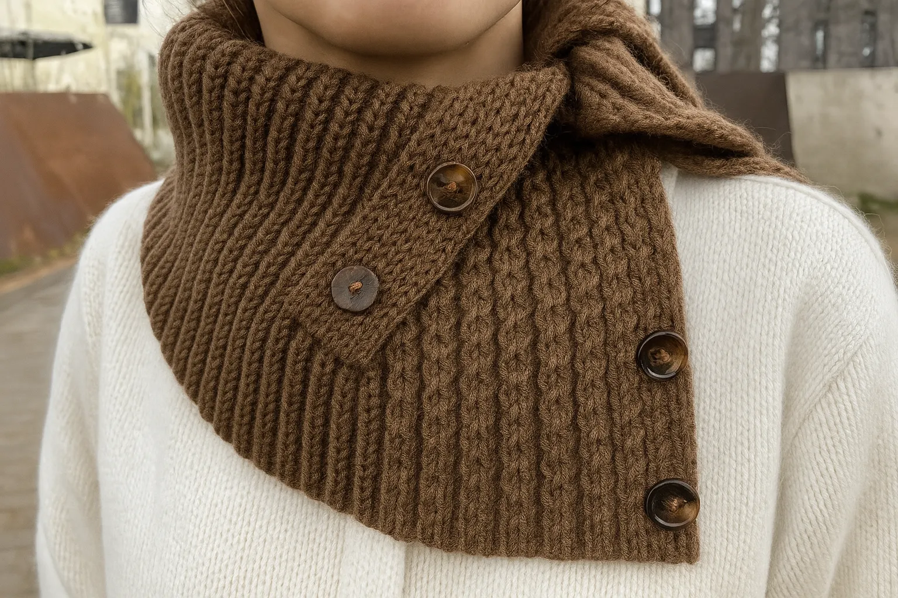

Små projekter for nye strikkere
At begynde at strikke føles som at træde ind i et nyt univers. I starten lærer du kun de grundlæggende masker og begreber at kende, men snart bliver pindene en naturlig forlængelse af dine hænder. Garnet bevæger sig mellem fingrene, og du opdager, hvordan noget så simpelt som ret og vrang kan forvandles til noget personligt og smukt. Det er en rejse, hvor tålmodighed og kreativitet går hånd i hånd, og hvor du gradvist får mere mod på at skabe. For en ny strikker handler det ikke kun om at få et færdigt resultat, men om at nyde hvert øjeblik i processen, rytmen, roen og den stille glæde i hver eneste maske.

Novice vanter

Oslo hue

Sokker til baby

Sophie scarf tørklæde

Slipover Junior

Anny sweater
Fra mønster til mesterværk
Når du har mange års erfaring med strik, handler det ikke længere kun om teknikken – det bliver en passion. Du kender håndværket til fingerspidserne og udfordrer dig selv med nye mønstre, former og detaljer. Garnet bliver som et sprog, du taler flydende, og farver, teksturer og fibre giver dig endeløse muligheder for at udtrykke dig. Hvert projekt starter som en tanke, men udvikler sig mellem hænderne til noget helt særligt, hvor selv små forskelle giver liv og personlighed. Som erfaren strikker finder du glæde i både det avancerede og det enkle, i fordybelsen, forfinelsen og skabelsen af noget, der afspejler både din kunnen og din kreativitet. Her bliver strik ikke blot et håndværk, men en form for kunst.

Emma sweater med knap

Anemone sweater med mønster

Pudebetræk

Dagmar zipper sweater

Anne tørklæde

Avy halsterklæde